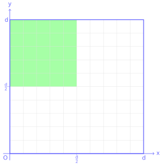
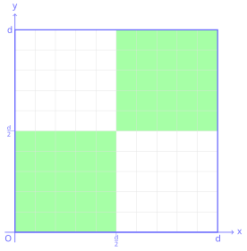
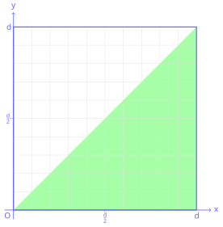
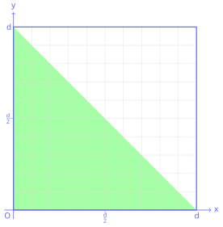
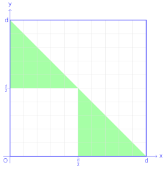
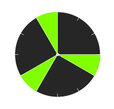

Python Basics - Booleans#
PREREQUISITES:
Having read basics 1 integer variables
Booleans are used in boolean algebra and have the type bool.
Values of truth in Python are represented with the keywords True and False: a boolean object can only have the values True or False.
[2]:
x = True
[3]:
x
[3]:
True
[4]:
type(x)
[4]:
bool
[5]:
y = False
[6]:
type(y)
[6]:
bool
Boolean operators#
We can operate on boolean values with the operators not, and, or:
and#
a |
b |
a and b |
|---|---|---|
|
|
|
|
|
|
|
|
|
|
|
|
or#
a |
b |
a or b |
|---|---|---|
|
|
|
|
|
|
|
|
|
|
|
|
not#
a |
not a |
|---|---|
|
|
|
|
Questions with costants#
QUESTION: For each of the following boolean expressions, try guessing the result (before guess, and then try them !):
not (True and False)(not True) or (not (True or False))not (not True)not (True and (False or True))not (not (not False))True and (not (not((not False) and True)))False or (False or ((True and True) and (True and False)))
Questions with variables#
QUESTION: For each of these expressions, for which values of x and y they give True? Try to think an answer before trying!
NOTE: there can be many combinations that produce True, find them all
x or (not x)(not x) and (not y)x and (y or y)x and (not y)(not x) or yy or not (y and x)x and ((not x) or not(y))(not (not x)) and not (x and y)x and (x or (not(x) or not(not(x or not (x)))))
QUESTION: For each of these expressions, for which values of x, y and z they give False?
NOTE: there can be many combinations that produce False, find them all
x or ((not y) or z)x or (not y) or (not z)not (x and y and (not z))not (x and (not y) and (x or z))y or ((x or y) and (not z))
De Morgan#
There are a couple of laws that sometimes are useful:
Formula |
Equivalent to |
|---|---|
|
|
|
|
QUESTION: Look at following expressions, and try to rewrite them in equivalent ones by using De Morgan laws, simplifying the result wherever possible. Then verify the translation produces the same result as the original for all possible values of x and y.
(not x) or y(not x) and (not y)(not x) and (not (x or y))
Example:
x,y = False, False
#x,y = False, True
#x,y = True, False
#x,y = True, True
orig = x or y
trans = not((not x) and (not y))
print('orig=',orig)
print('trans=',trans)
[7]:
# verify here
Conversion#
We can convert booleans into intergers with the predefined function int. Each integer can be converted into a boolean (and vice versa) with bool:
[8]:
bool(1)
[8]:
True
[9]:
bool(0)
[9]:
False
[10]:
bool(72)
[10]:
True
[11]:
bool(-5)
[11]:
True
[12]:
int(True)
[12]:
1
[13]:
int(False)
[13]:
0
Each integer is valued to True except 0. Note that truth values True and False behave respectively like integers 1 and 0.
Questions - what is a boolean?#
QUESTION: For each of these expressions, which results it produces?
bool(True)bool(False)bool(2 + 4)bool(4-3-1)int(4-3-1)True + TrueTrue + FalseTrue - TrueTrue * True
Evaluation order#
For efficiency reasons, during the evaluation of a boolean expression if Python discovers the possible result can only be one, it then avoids to calculate further expressions. For example, in this expression:
False and x
by reading from left to right, in the moment we encounter False we already know that the result of and operation will always be False independetly from the value of x (convince yourself).
Instead, if while reading from left to right Python finds first True, it will continue the evaluation of following expressions and as result of the whole ``and`` will return the evaluation of the last expression_. If we are using booleans, we will not notice the differences, but by exchanging types we might get surprises:
[14]:
True and 5
[14]:
5
[15]:
5 and True
[15]:
True
[16]:
False and 5
[16]:
False
[17]:
5 and False
[17]:
False
Let’s think which order of evaluation Python might use for the or operator. Have a look at the expression:
True or x
By reading from left to right, as soon as we find the True we mich conclude that the result of the whole or must be True independently from the value of x (convince yourself).
Instead, if the first value is False, Python will continue in the evaluation until it finds a logical value True, when this happens that value will be the result of the whole expression. We can notice it if we use different costants from True and False:
[18]:
False or 5
[18]:
5
[19]:
7 or False
[19]:
7
[20]:
3 or True
[20]:
3
The numbers you see have always a logical result coherent with the operations we did, that is, if you see 0 the expression result is intended to have logical value False and if you see a number different from 0 the result is intended to be True (convince yourself).
QUESTION: Have a look at the following expressions, and for each of them try to guess which result it produces (or if it gives an error):
0 and True1 and 0True and -10 and False0 or False0 or 1False or -60 or True
Evaluation errors#
What happens if a boolean expression contains some code that would generate an error? According to intuition, the program should terminate, but it’s not always like this.
Let’s try to generate an error on purpose. During math lessons they surely told you many times that dividing a number by zero is an error because the result is not defined. So if we try to ask Python what the result of 1/0 is we will (predictably) get complaints:
print(1/0)
print('after')
---------------------------------------------------------------------------
ZeroDivisionError Traceback (most recent call last)
<ipython-input-51-9e1622b385b6> in <module>()
----> 1 1/0
ZeroDivisionError: division by zero
Notice that 'after' is not printed because the progam gets first interrupted.
What if we try to write like this?
[21]:
False and 1/0
[21]:
False
Python produces a result without complaining ! Why? Evaluating form left to right it found a False and so it concluded before hand that the expression result must be False. Many times you will not be aware of these potential problems but it is good to understand them because there are indeed situations in which you can event exploit the execution order to prevent errors (for example in if and while instructions we will see later in the book).
QUESTION: Look at the following expression, and for each of them try to guess which result it produces (or if it gives on error):
True and 1/0
1/0 and 1/0
False or 1/0
True or 1/0
1/0 or True
1/0 or 1/0
True or (1/0 and True)
(not False) or not 1/0
True and 1/0 and True
(not True) or 1/0 or True
True and (not True) and 1/0
Comparison operators#
Comparison operators allow to build expressions which return a boolean value:
Comparator |
Description |
|---|---|
|
|
|
|
|
|
|
|
|
|
|
|
[22]:
3 == 3
[22]:
True
[23]:
3 == 5
[23]:
False
[24]:
a,b = 3,5
[25]:
a == a
[25]:
True
[26]:
a == b
[26]:
False
[27]:
a == b - 2
[27]:
True
[28]:
3 != 5 # 3 is different from 5 ?
[28]:
True
[29]:
3 != 3 # 3 is different from 3 ?
[29]:
False
[30]:
3 < 5
[30]:
True
[31]:
5 < 5
[31]:
False
[32]:
5 <= 5
[32]:
True
[33]:
8 > 5
[33]:
True
[34]:
8 > 8
[34]:
False
[35]:
8 >= 8
[35]:
True
Since the comparison are expressions which produce booleans, we can also assign the result to a variable:
[36]:
x = 5 > 3
[37]:
print(x)
True
Joining comparisons#
Given a couple of quantities:
[38]:
x, y = 7, 5
If we ask ourselves whether both x and y are greater than zero, which boolean expression should we write?
The correct way (although a bit verbose) is the following:
[39]:
x > 0 and y > 0
[39]:
True
WARNING: the following code instead is NOT correct:
x and y > 0 # WRONG!
Why? Apparently on some inputs it seems to work:
[40]:
x,y = 7, 5
x and y > 0 # WARNING!
[40]:
True
[41]:
x,y = 7, -6
x and y > 0 # WARNING!
[41]:
False
Does it really work on all of them?
[42]:
x,y = -3, 5
x and y > 0 # WARNING!
[42]:
True
Mmm we found something wrong…. What’s the reason? Implicitly, Python has considered the expression with these parenthesis:
[43]:
x,y = -3,5
(x) and (y>0) # WARNING!
[43]:
True
This way it’s evident that on the left Python is considering x like it were a single boolean expression: as such, it tries to interpret the logical value of the integer -3: since it’s a number different from zero, it’s considered as True, hence the strange result.
QUESTION: What if we tried to place these parenthesis?
x,y = -3,5
(x and y) > 0 # WARNING!
Try thinking in depth all the steps Python will perform to calculate the expression.
ANSWER: in this case both x and y are considered single boolean expressions, so Python internally will reduce the expression with these steps:
(True and True) > 0True > 01 > 0True
Note that at step 2) True is converted to the integer value 1.
QUESTION: Look at the following expression, and for each of them try to guess which result it produces (or if it gives on error):
x = 3 == 4
print(x)
x = False or True
print(x)
True or False = x or False
print(x)
x,y = 9,10
z = x < y and x == 3**2
print(z)
a,b = 7,6
a = b
x = a >= b + 1
print(x)
x = 3^2
y = 9
print(x == y)
Spatial Binary Classifier#
A binary classifier assigns each point in a domain to one of two classes according to a mathematical rule.
Consider a square domain with side length d. A point is identified by its Cartesian coordinates (x, y), with the origin at the lower-left corner.
Define a classifier that labels each point as:
Trueif it belongs to the green region.Falseotherwise.
Write a single Boolean expression that implements this classifier.
Do not use
ifstatements or conditional expressions.Write the classifier using the variable
d(do not substituted = 100).The result should be a Boolean value (
TrueorFalse) for any point(x, y).

[ ]:
d = 100
x,y = 0, 0 # False
#x,y = 25, 25 # False
#x,y = 75, 75 # False
#x,y = 75, 25 # False
#x,y = 25, 75 # True
#x,y = 100, 100 # False
#x,y = 10, 90 # True
#x,y = 60, 60 # False
# write here
Show solution
[ ]:
d = 100
x,y = 0, 0 # False
#x,y = 25, 25 # False
#x,y = 75, 75 # False
#x,y = 75, 25 # False
#x,y = 25, 75 # True
#x,y = 100, 100 # False
#x,y = 10, 90 # True
#x,y = 60, 60 # False
x < d/2 and y > d/2
Repeat the exercise on this new domain

[ ]:
d = 100
x,y = 0, 0 # True
#x,y = 25, 25 # True
#x,y = 75, 75 # True
#x,y = 75, 25 # False
#x,y = 25, 75 # False
#x,y = 100, 100 # True
#x,y = 10, 90 # False
#x,y = 60, 60 # True
# write here
Show solution
[ ]:
d = 100
x,y = 0, 0 # True
#x,y = 25, 25 # True
#x,y = 75, 75 # True
#x,y = 75, 25 # False
#x,y = 25, 75 # False
#x,y = 100, 100 # True
#x,y = 10, 90 # False
#x,y = 60, 60 # True
(x < d/2 and y < d/2) or (x > d/2 and y > d/2)
Repeat the exercise on this new domain

[ ]:
d = 100
x,y = 50, 10 # True
#x,y = 100,0 # True
#x,y = 75, 70 # True
#x,y = 25,75 # False
#x,y = 25, 5 # True
#x,y = 5, 80 # False
#x,y = 60, 70 # False
# write here
Show solution
[ ]:
d = 100
x,y = 50, 10 # True
#x,y = 100,0 # True
#x,y = 75, 70 # True
#x,y = 25,75 # False
#x,y = 25, 5 # True
#x,y = 5, 80 # False
#x,y = 60, 70 # False
y < x
Repeat the exercise on this new domain

[ ]:
d = 100
x,y = 50, 10 # True
#x,y = 0,0 # True
#x,y = 75, 70 # False
#x,y = 25,90 # False
#x,y = 25, 5 # True
#x,y = 80, 20 # False
#x,y = 25, 25 # True
# write here
Show solution
[ ]:
d = 100
x,y = 50, 10 # True
#x,y = 0,0 # True
#x,y = 75, 70 # False
#x,y = 25,90 # False
#x,y = 25, 5 # True
#x,y = 80, 20 # False
#x,y = 25, 25 # True
y < -x + d
Last one, I swear!

[ ]:
d = 80
x,y = 0, 0 # False
#x,y = 20, 20 # False
#x,y = 60, 10 # True
#x,y = 10, 60 # True
#x,y = 20, 70 # False
#x,y = 70, 20 # False
#x,y = 70, 70 # False
#x,y = 0,60 # True
#x,y = 60,0 # True
# write here
Show solution
[ ]:
d = 80
x,y = 0, 0 # False
#x,y = 20, 20 # False
#x,y = 60, 10 # True
#x,y = 10, 60 # True
#x,y = 20, 70 # False
#x,y = 70, 20 # False
#x,y = 70, 70 # False
#x,y = 0,60 # True
#x,y = 60,0 # True
((x > d//2) or (y > d//2)) and (x < -y + d)
The Repeating Zones#
n represents a position on a repeating circular scale.Some intervals of the scale are marked as active zones:
90 ≤ position < 120210 ≤ position < 240330 ≤ position < 360
Write code that outputs True if n falls inside one of the active zones, and False otherwise.
Constraints
Do not use
ifstatements.ncan be any integer, including values greater than360(for example460,815,925).

[ ]:
n = 20 # False
#n = 405 # False
#n = 70 # False
#n = 100 # True
#n = 460 # True
#n = 225 # True
#n = 182 # False
#n = 253 # False
#n = 275 # False
#n = 205 # False
#n = 350 # True
#n = 925 # False
#n = 815 # True
#n = 92 # True
# write here
Show solution
[ ]:
n = 20 # False
#n = 405 # False
#n = 70 # False
#n = 100 # True
#n = 460 # True
#n = 225 # True
#n = 182 # False
#n = 253 # False
#n = 275 # False
#n = 205 # False
#n = 350 # True
#n = 925 # False
#n = 815 # True
#n = 92 # True
# 1. LONG SOLUTION
# Looking at the figure, we see the zones are between 90° and 120°, 210° and 240°, 330 and 360°
# A first problem to tackle is the fact the hand can have rotated more than 360°, like 460° or 925° as in test.
# To solve this first problem, we can directly use the module operator like this
# to always get numbers between 0 and 359 included:
# m = n % 360
# This way we could simply solve the exercise with many and/or, like:
# (m >= 90 and m < 120) or (m >= 210 and m < 240) or (m >= 330 and m < 360) # 'long' solution
# 2. SHORT SOLUTION
# As an alternative, consider this fact: if you take sequences of 4 segments of 30° each,
# every sequence occupies 120° and we are interested to know when the hand is in the last segment,
# between 90° and 120°. We can then creatively use the modulus operator to 'shorten' the clock panel
# and ignore all the degrees after the 120th. Finally, we look whether or not m is lying in the last segment:
# m = n % 120 # number between 0 and 119 included
# m > 3 * 30
n % 120 > 90 # 'short' solution
The Three Levels#
A system has three platforms at heights t1, t2, and t3.
Each platform contains a different reward:
Platform 1 → 10 points
Platform 2 → 20 points
Platform 3 → 30 points
A player jumps and reaches a height h.
Write code that prints the number of points collected:
10if the player reaches the first platform,20if the player reaches the second platform,30if the player reaches the third platform.
Constraints
Do not use
ifstatements.Assume the heights are ordered:
t1 < t2 < t3.The jump height
hcan be any value.

[ ]:
t1,t2,t3 = 200,500,600
h=450 # 10
#h=570 # 20
#h=610 # 30
#h=50 # 0
# write here
Show solution
[ ]:
t1,t2,t3 = 200,500,600
h=450 # 10
#h=570 # 20
#h=610 # 30
#h=50 # 0
(h >= t3 and 30) or (h >= t2 and 20) or (h >= t1 and 10) or 0
Continue#
Go on with Python Basics - Float